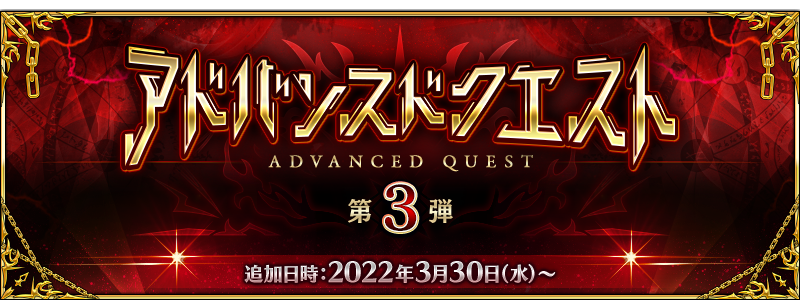

感謝您使用「Fate/Grand Order」。
在2022年3月27日(日)放送的「Fate/Grand Order 特別舞台 in AnimeJapan 2022」，發表了有關智慧型手機FateRPG「Fate/Grand Order」為主的FGO PROJECT關聯新情報。
以下介紹節目內發表的一部份新情報。
◆為了記念「AnimeJapan 2022」的出展，贈送聖晶石10個！◆

為了記念「AnimeJapan 2022」的出展，向2022年3月28日(一) 2:59前通過「特異點F 炎上汙染都市 冬木」的御主贈送聖晶石10個。
■對象期間
2022年3月28日(一) 3:00～4月1日(五) 2:59
■贈送內容
聖晶石 10個
■領取條件
2022年3月28日(一) 2:59前通過「特異點F 炎上汙染都市 冬木」的御主對象
※期間內未登入的話無法領取。
※禮物只能領取1次。
※上述時間前，在管理室(ターミナル)畫面的關卡橫幅必須要有「CLEAR」的文字顯示。
◆做為Twitter宣傳活動3萬轉推達成報酬贈送聖晶石6個！◆
由於在「Fate/Grand Order 特別ステージ in AnimeJapan 2022」實施的Twitter宣傳活動達成3萬轉推，，向2022年3月28日(一) 2:59前通過「特異點F 炎上汙染都市 冬木」的御主贈送聖晶石6個。
■對象期間
2022年3月28日(一) 3:00～4月4日(一) 2:59
■贈送內容
聖晶石 6個
■領取條件
2022年3月28日(一) 2:59前通過「特異點F 炎上汙染都市 冬木」的御主對象
※期間內未登入的話無法領取。
※禮物只能領取1次。
※上述時間前，在管理室(ターミナル)畫面的關卡橫幅必須要有「CLEAR」的文字顯示。
◆期間限定活動「水怪危機 純潔者們的浮島」決定舉辦！◆
發表了期間限定活動「水怪危機 純潔者們的浮島」自2022年4月6日(三) 17:00(預定)舉辦。
期間限定活動「水怪危機 純潔者們的浮島」中，進行活動的話可讓活動限定從者加入。
另外，公開在聖晶石召喚新登場的期間限定從者「關係好的Saber」的視覺圖。
◆「Fate/Grand Order 春之新手御主聲援宣傳活動2022！」舉辦！◆
發表了「Fate/Grand Order 春的新米御主聲援宣傳活動2022！」自2022年3月30日(三) 17:00(預定)以期間限定舉辦。
向剛開始「Fate/Grand Order」的新手御主，實施好友欄位擴張、限定任務的追加、起跑衝刺登入獎勵的增量等。
另外，也發表了舉辦跟隨Fate/Grand Order官方Twitter帳號(@fgoproject)，轉推該推特，就會抽出合計160名贈送豪華道具的宣傳活動。
◆「進階關卡 第3彈」舉辦！◆

發表了只能靠自己培育的從者來挑戰的測試用關卡「進階關卡 第3彈」自2022年3月30日(三) 17:00(預定)舉辦。
通過在「進階關卡 第3彈」開放的測試用關卡後，可獲得提升「龍之牙」「虛影之塵」「凶骨」掉落率的概念禮裝。
◆Road to 7 [Lostbelt No.2] 舉辦！◆
發表了為了與更多的御主迎接預定2022年開幕的第2部 第7章而開始的宣傳活動「Road to 7」。做為其第2彈「Road to 7 [Lostbelt No.2]」自2022年3月30日(三) 17:00(預定)舉辦。
本宣傳活動中，實施追加「★5(SSR)斯卡哈＝斯卡蒂」的幕間物語、第2部 第1章「Lostbelt No.1 永久凍土帝國 安娜塔西亞 獸國的皇女」與第2章「Lostbelt No.2 無間冰焰世紀 諸神黃昏 不滅之火的好漢」的主線關卡消耗AP1/4等聲援通過的措施。
另外，也預定公開與第2部 第2章「Lostbelt No.2 無間冰焰世紀 諸神黃昏 不滅之火的好漢」故事的一部份新收錄語音一起回顧的短版PV「Re:Discover Movie Lostbelt No.2」和接觸第2部 第2章故事結尾的談話節目「Spotlight Lostbelt No.2」。
短版PV和談話節目等詳情請自「Road to 7」入口網站確認。
◆Re:Discover Movie Lostbelt No.2◆
預定近日公開
◆Spotlight Lostbelt No.2◆
播送時間:2022年4月3日(日) 18:00～
出演者:石谷春貴、田中美海
■「Road to 7」入口網站
https://roadto7.fate-go.jp/
◆『「Lostbelt No.2」Pick Up召喚』預定舉辦！◆
發表了預定舉辦從「Road to 7 [Lostbelt No.2]」關聯從者之中包含期間限定從者「★5(SSR)西格魯德」「★5(SSR)布倫希爾德(Lancer)」「★5(SSR)斯卡哈＝斯卡蒂」的6位從者Pick Up的5種召喚。
◆『AnimeJapan 2022』舉辦記念官方周邊在ANIPLEX＋接受訂單中！◆
『AnimeJapan 2022』官方周邊在ANIPLEX＋接受販售訂單中！
接受期間:2022年4月10日(日) 22:59
https://www.aniplexplus.com/animejapan2022
◆『看漫畫搞懂！Fate/Grand Order』聯動活動預定舉辦！◆
發表了預定在2022年的黃金週舉辦與『看漫畫搞懂！Fate/Grand Order』的聯動活動。
◆『Fate/Grand Order』×『Fate/Grand Order Arcade』連動措施情報！◆
發表了預定實施在「Fate/Grand Order Arcade」舉辦的「收束特異點 背徳果實都市 莉莉姆淫婦」 Beast 殲滅戰與「Fate/Grand Order」的連動措施。
「Beast 殲滅戰」為反覆殲滅Beast的活動。量表歸0就擊退成功，成功擊退的話可得到「傳承結晶」。
在「Fate/Grand Order Arcade」的「Beast 殲滅戰」期間中，也實施達成撃破20萬鱗「擊退成功」的話，於「Fate/Grand Order」的初次登入獎勵贈送聖晶石10個的連動宣傳活動。
「收束特異點 背徳果實都市 莉莉姆淫婦」 Beast 殲滅戦的詳情請在此處觀看。
https://arcade.fate-go.jp/raidbattle/202203/
其他詳情請在「Fate/Grand Order Arcade」官方網站或官方Twitter觀看。
■「Fate/Grand Order Arcade」官方網站
https://arcade.fate-go.jp/
■「Fate/Grand Order Arcade」官方Twitter
https://twitter.com/FGOAC_project/
今後也請多多指教「Fate/Grand Order」。